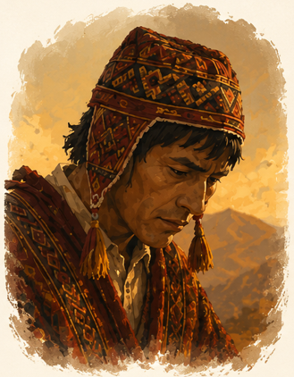
COMUNERO
Agricultor afectado por la sequía y la pérdida de su ajayu.
TALLER DE PROYECTOS · CARRERA DE INFORMÁTICA
Del relato ancestral al análisis de sistemas
▶ VER VIDEORelato: Ritos y tipos de agua en el Cerro Kallami
Narrador: Ernesto Marqués Chávez
Fuente: Archivo Oral de la Carrera de Literatura · UMSA
En la comunidad de Pucarani, un comunero es asustado por una Ñanqha (espíritu maligno), lo que le provoca una enfermedad y la pérdida de su ajayu (alma). Para sanar, acude a un Yatiri, quien identifica el lugar donde ocurrió el susto y realiza un ritual de cambio cósmico con prendas, tierra del lugar y un perro. Además, ante la sequía que amenaza la siembra de papa, la comunidad sube al Cerro Kallami, donde existen tres pozos de agua —uno de granizada, uno de lluvia y uno de tiempo seco— y solo el Yatiri sabe distinguir cuál corresponde a cada necesidad. Tras la ofrenda (waxt'a) correcta, la lluvia llega y salva la cosecha.

Agricultor afectado por la sequía y la pérdida de su ajayu.
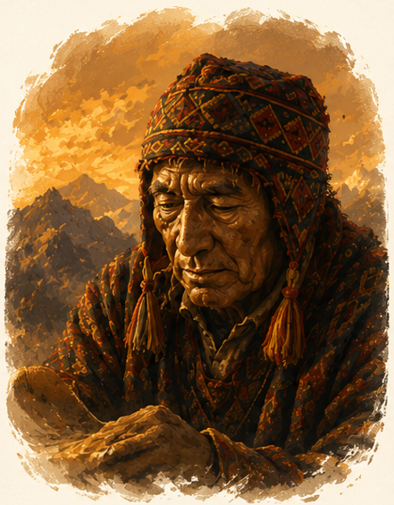
Sabio de la comunidad que interpreta la situación y guía el ritual.
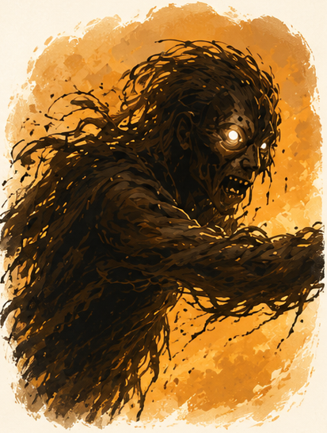
EnÑANQHAtidad que causa desequilibrio y afecta al comunero.
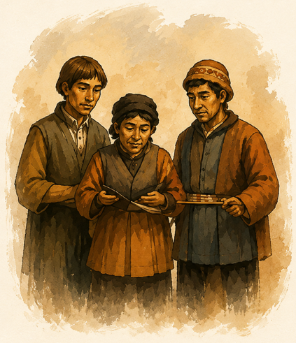
Personas que apoyan y reciben el resultado final.
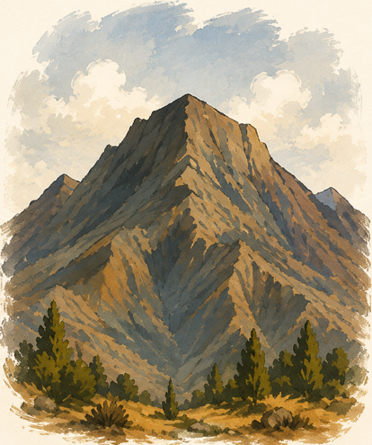
Lugar sagrado donde se encuentran los pozos de agua.
Transformamos el relato ancestral en un sistema que puede analizarse y optimizarse.
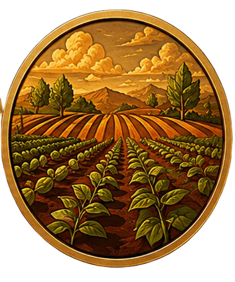
Cultivo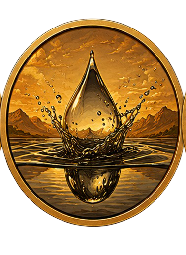
Necesidad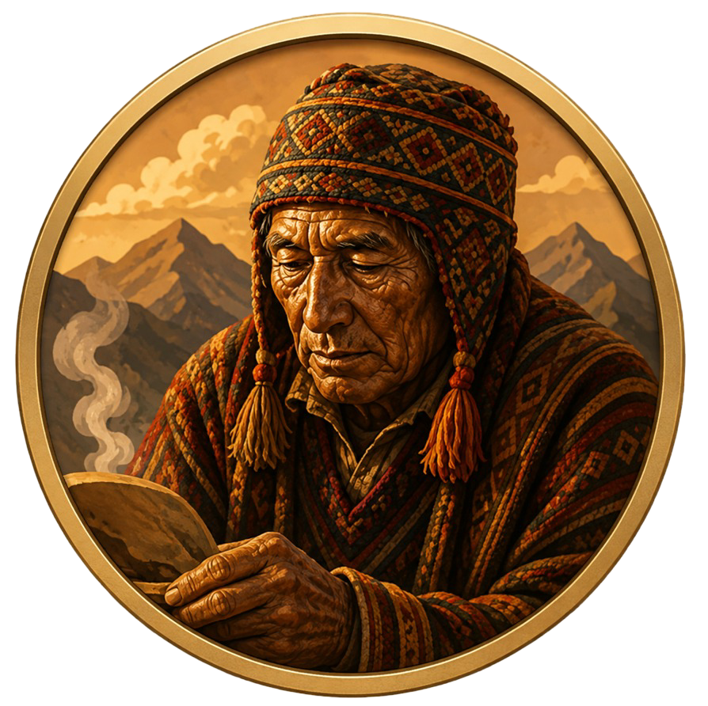
Yatiri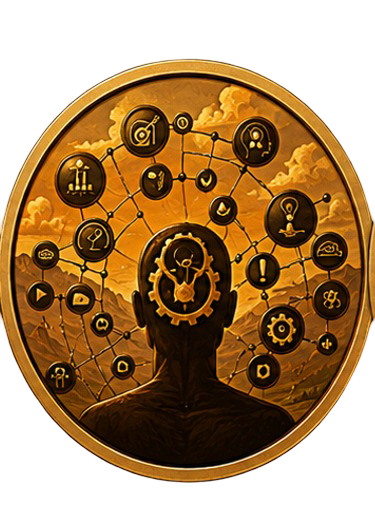
Conocimiento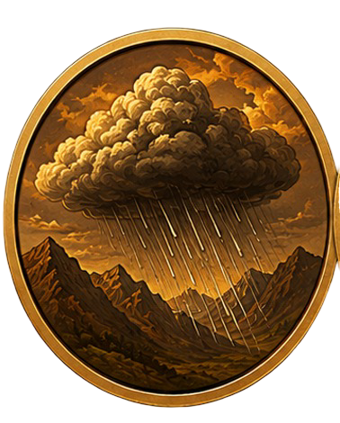
Resultado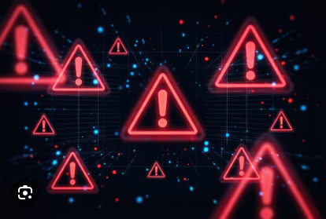
AlertaLas diez etapas del relato y su transformación.

El comunero cultiva sus papas en Pucarani.

Aparece la sequía y la Ñanqha.

El comunero pierde su ajayu.

El Yatiri llega y observa el entorno.

Se inicia el ritual en el cerro.

El Yatiri enfrenta señales y obstáculos.

Debe escoger el pozo correcto.
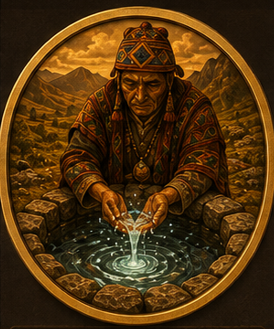
Se encuentra el agua adecuada.
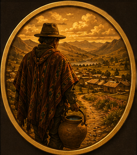
El comunero vuelve con el agua.
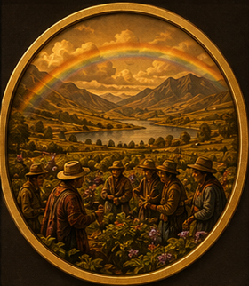
La comunidad recupera su equilibrio.
La historia organizada para su producción audiovisual.
Identificación de actores, funciones, entradas, procesos, salidas y oportunidades de mejora.
 Comunidad
Recibe el resultado de la decisión.
Comunidad
Recibe el resultado de la decisión.
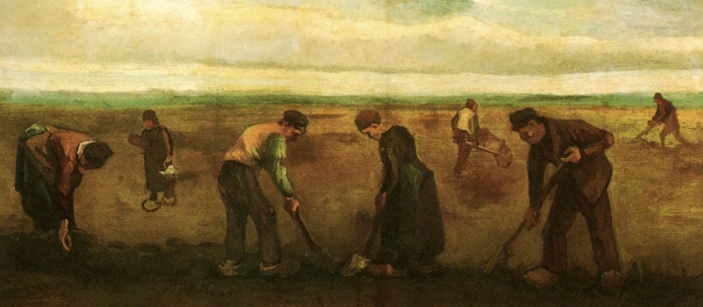
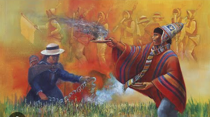
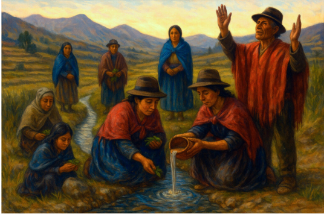
Dependencia de conocimiento especializado concentrado en un único actor para realizar el diagnóstico y tomar decisiones relacionadas con el recurso hídrico.
Sistema de Gestión Hídrica y Alerta Temprana.
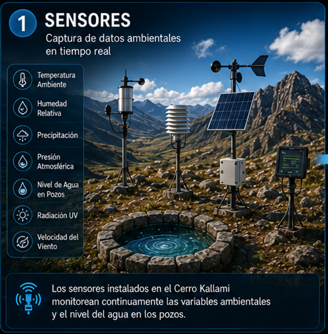
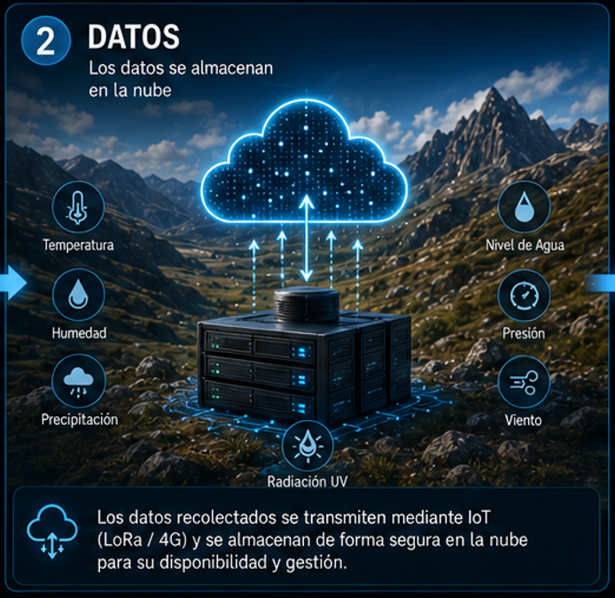

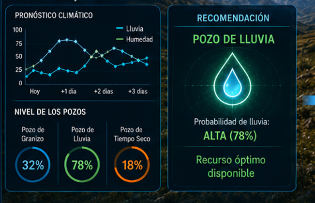
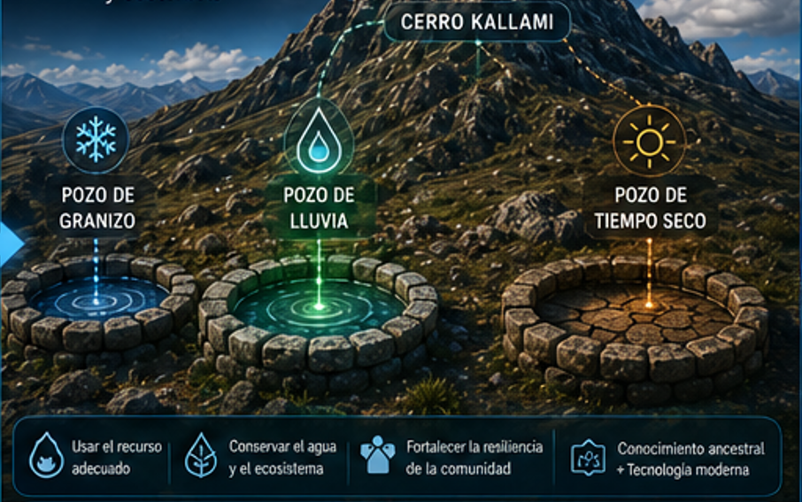
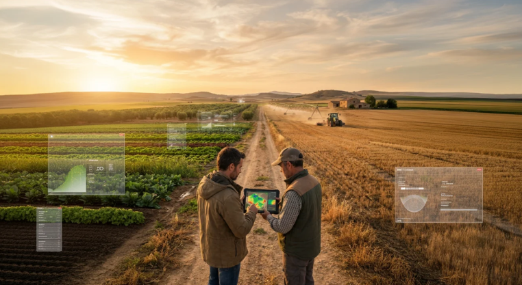
Proceso de generación iterativa, diagnóstico de inconsistencias y control de continuidad por keyframes.
Generación sin anclaje temporal
Secuencia segmentada en 6 keyframes de 2 segundos para garantizar continuidad visual y cultural estricta.
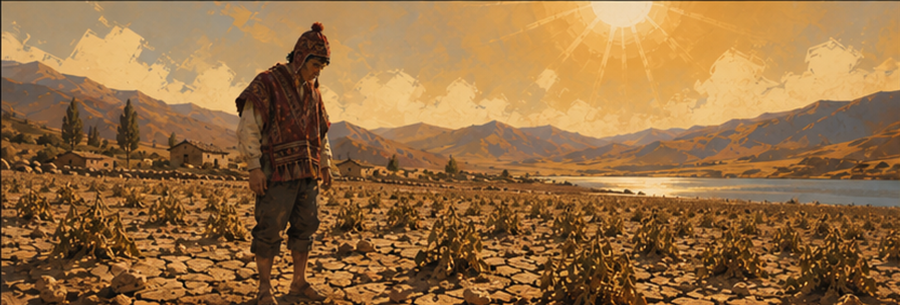
1A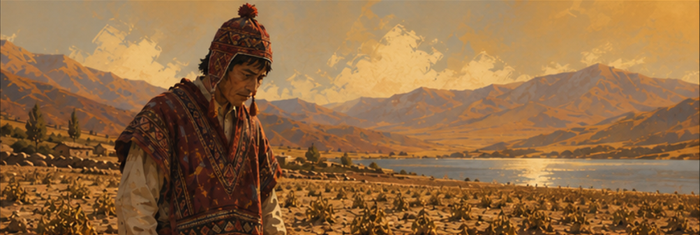
1B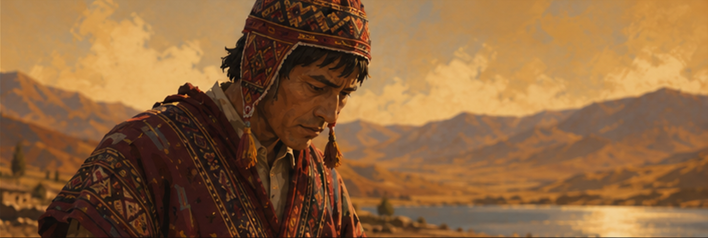
1C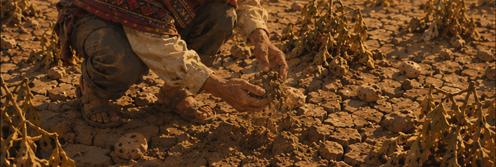
1D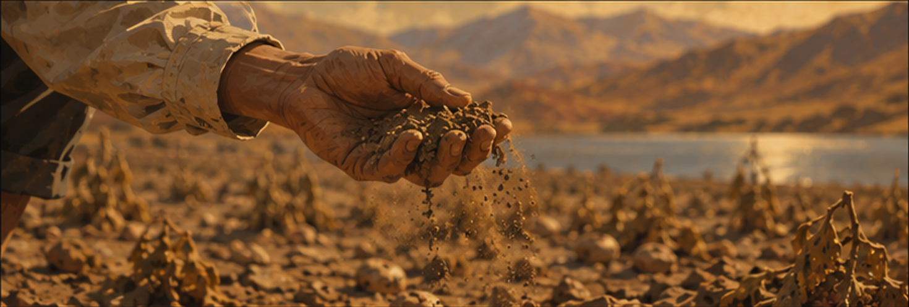
1E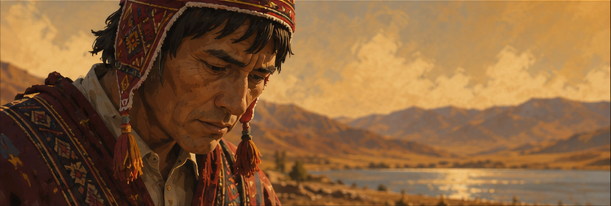
1FLa interpolación final mantiene las facciones nativas, los colores cálidos del atardecer en Pucarani y los detalles del tejido tradicional sin aberraciones visuales.
Análisis, estructuración de guiones y creación de instrucciones (prompts).

Modelo multimodular de inteligencia artificial de Google.

Animación y conversión de imágenes fijas a video (Image-to-Video).

Montaje general, edición de audio, adición de subtítulos y transiciones.

Plataforma de conversión de texto a voz (Text-to-Speech).
Generador de música y canciones completas por inteligencia artificial.